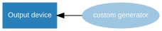
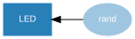
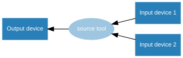
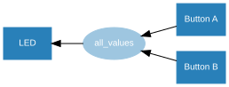
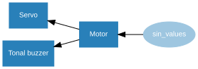
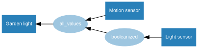
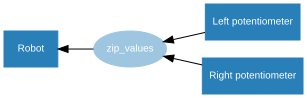
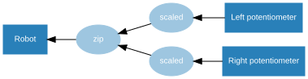

7. Source/Values
GPIO Zero provides a method of using the declarative programming paradigm to connect devices together: feeding the values of one device into another, for example the values of a button into an LED:
from gpiozero import LED, Button
from signal import pause
led = LED(17)
button = Button(2)
led.source = button
pause()
which is equivalent to:
from gpiozero import LED, Button
from time import sleep
led = LED(17)
button = Button(2)
while True:
led.value = button.value
sleep(0.01)
except that the former is updated in a background thread, which enables you to do other things at the same time.
Every device has a value property (the device’s current value).
Input devices (like buttons) can only have their values read, but output devices
(like LEDs) can also have their value set to alter the state of the device:
>>> led = PWMLED(17)
>>> led.value # LED is initially off
0.0
>>> led.on() # LED is now on
>>> led.value
1.0
>>> led.value = 0 # LED is now off
Every device also has a values property (a generator
continuously yielding the device’s current value). All output devices have a
source property which can be set to any iterator. The
device will iterate over the values of the device provided, setting the device’s
value to each element at a rate specified in the
source_delay property (the default is 0.01 seconds).
The most common use case for this is to set the source of an output device to match the values of an input device, like the example above. A more interesting example would be a potentiometer controlling the brightness of an LED:
from gpiozero import PWMLED, MCP3008
from signal import pause
led = PWMLED(17)
pot = MCP3008()
led.source = pot
pause()
The way this works is that the input device’s values
property is used to feed values into the output device. Prior to v1.5, the
source had to be set directly to a device’s
values property:
from gpiozero import PWMLED, MCP3008
from signal import pause
led = PWMLED(17)
pot = MCP3008()
led.source = pot.values
pause()
Note
Although this method is still supported, the recommended way is now to set
the source to a device object.
It is also possible to set an output device’s source to
another output device, to keep them matching. In this example, the red LED is
set to match the button, and the green LED is set to match the red LED, so both
LEDs will be on when the button is pressed:
from gpiozero import LED, Button
from signal import pause
red = LED(14)
green = LED(15)
button = Button(17)
red.source = button
green.source = red
pause()
7.1. Processing values
The device’s values can also be processed before they are passed to the
source:
For example, writing a generator function to pass the opposite of the Button value into the LED:
from gpiozero import Button, LED
from signal import pause
def opposite(device):
for value in device.values:
yield not value
led = LED(4)
btn = Button(17)
led.source = opposite(btn)
pause()
Alternatively, a custom generator can be used to provide values from an artificial source:

For example, writing a generator function to randomly yield 0 or 1:

from gpiozero import LED
from random import randint
from signal import pause
def rand():
while True:
yield randint(0, 1)
led = LED(17)
led.source = rand()
pause()
If the iterator is infinite (i.e. an infinite generator), the elements will be
processed until the source is changed or set to
None.
If the iterator is finite (e.g. a list), this will terminate once all elements are processed (leaving the device’s value at the final element):
from gpiozero import LED
from signal import pause
led = LED(17)
led.source_delay = 1
led.source = [1, 0, 1, 1, 1, 0, 0, 1, 0, 1]
pause()
7.2. Source Tools
GPIO Zero provides a set of ready-made functions for dealing with
source/values, called source tools. These are available by importing from
gpiozero.tools.
Some of these source tools are artificial sources which require no input:
In this example, random values between 0 and 1 are passed to the LED, giving it a flickering candle effect:
from gpiozero import PWMLED
from gpiozero.tools import random_values
from signal import pause
led = PWMLED(4)
led.source = random_values()
led.source_delay = 0.1
pause()
Note that in the above example, source_delay is used to
make the LED iterate over the random values slightly slower.
source_delay can be set to a larger number (e.g. 1 for a
one second delay) or set to 0 to disable any delay.
Some tools take a single source and process its values:
In this example, the LED is lit only when the button is not pressed:
from gpiozero import Button, LED
from gpiozero.tools import negated
from signal import pause
led = LED(4)
btn = Button(17)
led.source = negated(btn)
pause()
Note
Note that source tools which take one or more value parameters support
passing either ValuesMixin derivatives, or iterators, including a
device’s values property.
Some tools combine the values of multiple sources:

In this example, the LED is lit only if both buttons are pressed (like an AND gate):

from gpiozero import Button, LED
from gpiozero.tools import all_values
from signal import pause
button_a = Button(2)
button_b = Button(3)
led = LED(17)
led.source = all_values(button_a, button_b)
pause()
Similarly, any_values() with two buttons would simulate an OR
gate.
While most devices have a value range between 0 and 1, some have
a range between -1 and 1 (e.g. Motor, Servo and
TonalBuzzer). Some source tools output values between -1 and 1, which
are ideal for these devices, for example passing sin_values() in:

from gpiozero import Motor, Servo, TonalBuzzer
from gpiozero.tools import sin_values
from signal import pause
motor = Motor(2, 3)
servo = Servo(4)
buzzer = TonalBuzzer(5)
motor.source = sin_values()
servo.source = motor
buzzer.source = motor
pause()
In this example, all three devices are following the sine wave. The motor
value ramps up from 0 (stopped) to 1 (full speed forwards), then back down to 0
and on to -1 (full speed backwards) in a cycle. Similarly, the servo moves from
its mid point to the right, then towards the left; and the buzzer starts with
its mid tone, gradually raises its frequency, to its highest tone, then down
towards its lowest tone. Note that setting source_delay
will alter the speed at which the device iterates through the values.
Alternatively, the tool cos_values() could be used to start from -1
and go up to 1, and so on.
7.3. Internal devices
GPIO Zero also provides several internal devices which
represent facilities provided by the operating system itself. These can be used
to react to things like the time of day, or whether a server is available on the
network. These classes include a values property which can
be used to feed values into a device’s source. For example,
a lamp connected to an Energenie socket can be controlled by a
TimeOfDay object so that it is on between the hours of 8am and 8pm:
from gpiozero import Energenie, TimeOfDay
from datetime import time
from signal import pause
lamp = Energenie(1)
daytime = TimeOfDay(time(8), time(20))
daytime.when_activated = lamp.on
daytime.when_deactivated = lamp.off
pause()
Using the DiskUsage class with LEDBarGraph can show your Pi’s
disk usage percentage on a bar graph:
from gpiozero import DiskUsage, LEDBarGraph
from signal import pause
disk = DiskUsage()
graph = LEDBarGraph(2, 3, 4, 5, 6, 7, 8)
graph.source = disk
pause()
Demonstrating a garden light system whereby the light comes on if it’s dark and
there’s motion is simple enough, but it requires using the
booleanized() source tool to convert the light sensor from a float
value into a boolean:

from gpiozero import LED, MotionSensor, LightSensor
from gpiozero.tools import booleanized, all_values
from signal import pause
garden = LED(2)
motion = MotionSensor(4)
light = LightSensor(5)
garden.source = all_values(booleanized(light, 0, 0.1), motion)
pause()
7.4. Composite devices
The value of a composite device made up of the nested values of
its devices. For example, the value of a Robot object is a 2-tuple
containing its left and right motor values:
>>> from gpiozero import Robot
>>> robot = Robot(left=(14, 15), right=(17, 18))
>>> robot.value
RobotValue(left_motor=0.0, right_motor=0.0)
>>> tuple(robot.value)
(0.0, 0.0)
>>> robot.forward()
>>> tuple(robot.value)
(1.0, 1.0)
>>> robot.backward()
>>> tuple(robot.value)
(-1.0, -1.0)
>>> robot.value = (1, 1) # robot is now driven forwards
Use two potentiometers to control the left and right motor speed of a robot:

from gpiozero import Robot, Motor, MCP3008
from gpiozero.tools import zip_values
from signal import pause
robot = Robot(left=Motor(4, 14), right=Motor(17, 18))
left_pot = MCP3008(0)
right_pot = MCP3008(1)
robot.source = zip_values(left_pot, right_pot)
pause()
To include reverse direction, scale the potentiometer values from 0->1 to -1->1:

from gpiozero import Robot, Motor, MCP3008
from gpiozero.tools import scaled
from signal import pause
robot = Robot(left=Motor(4, 14), right=Motor(17, 18))
left_pot = MCP3008(0)
right_pot = MCP3008(1)
robot.source = zip(scaled(left_pot, -1, 1), scaled(right_pot, -1, 1))
pause()
Note that this example uses the built-in zip() rather than the tool
zip_values() as the scaled() tool yields values which
do not need converting, just zipping. Also note that this use of zip()
will not work in Python 2, instead use izip.